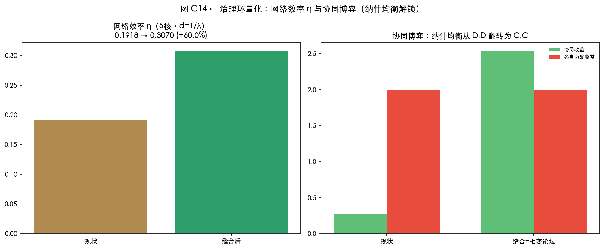

THE EMERGENT BELT — Jing-Zhang Hyper Line: Computable Urban Science for the Centennial Jing-Zhang AI Innovation Belt
A complete AI-innovation-belt urban design built on the CASA complexity urban-science methodology: fractal spectrum, space syntax, SIMULACRA four-sector flows, CA emergence and scaling health-factor diagnostics, all computed locally. The diagnosis finds 7 severed spine crossings, a 2/5 fragmented core, functional deviation and path lock-in; seven-node stitching triggers a phase transition (job reach +15.9%, integration +65%~+132%). Four loops — worldview, diagnosis, intervention, verification, allocation — progress layer by layer, letting sublinear infrastructure carry superlinear innovation returns that flow back to every citizen through AI equity.
THE EMERGENT BELT — Jing-Zhang Hyper Line
The soul paragraph: "We are moving from a world where cities are simply places containing computers, to one where the computer itself contains the city." — Michael Batty, The Computable City. This proposal takes that sentence as its method: it designs the century-old Jing-Zhang corridor as a computable urban system — not a pretty vision board, but five layers of computation (fractal spectrum, space syntax, four-sector spatial flows, cellular emergence, scaling verification) that prove, layer by layer, what is sick, what to treat, whether the treatment works, and who gets the returns. The conclusion first: the skeleton of this belt is healthy (fractal D=1.746 inside the healthy band; health factor H=1.556 above the 1.35 benchmark) — but it is broken (the spine is severed by 7 arterials, only 2 of 5 core nodes connect, and the jobs-housing system is path-locked). Every design move is of one kind: stitch the gaps, unlock the lock-in, measure the unmeasured — then let sublinear infrastructure (roads, green, public space) carry superlinear innovation returns (β>1 patents, firms, talent density), and let the returns flow back to every citizen through AI equity. Four loops, layer by layer: worldview → diagnosis → intervention → verification → allocation. Each chapter ends by telling you where you stand in the loop.
Design Basis and Source List
[Worldview loop] Methodological declaration (this chapter is the operating system of the proposal). Seven meta-principles of Batty/CASA urban science: ①cities are a science of pluralities — this proposal measures one site with five rulers (fractal morphology, network science, spatial economics, dynamical systems, statistical physics); ②models are "lenses for dialogue", not crystal balls (Paper 122) — every model here explores and verifies, never promises point predictions; ③cities emerge bottom-up — land use is generated from POI existing character and CA simulation; planning only sets constraints and unlocks; ④dual clocks — 25,476 Amap POIs (the second-to-day high-frequency pulse) × boundaries and regulatory plans (the year-to-decade low-frequency skeleton) Source; ⑤cities are flows and networks ("flows and networks are two sides of the same coin") — the core object is the four-sector flow of jobs-residence-retail-services, not parcels; ⑥digital twins are exploration tools — all digital assets are labeled as proxies, never mirrors; ⑦cities are fractal — the healthy skeleton of D=1.746 is the departure point of everything.
Terminology bridge (for jurors without a CASA background): λ = regional coupling strength (like water temperature: below the knee λc≈0.42 it is warm water, above it steam); percolation = whether the network joins into one piece (59.27% threshold); fractal D = the "health density" of urban fabric (healthy old cities 1.6–1.8); integration = how close a junction is to everywhere else; scaling exponent β = how fast a function grows with scale (β>1 the more the merrier, β<1 the bigger the cheaper); H=γ/β health factor = innovation growth rate over infrastructure cost rate (benchmark 1.35; below 1 the system consumes itself); SIMULACRA = the four-sector jobs→residence→retail→services flow model (CASA Paper 163); CA = cellular automata, where every cell evolves by local neighborhood rules (the minimal model of bottom-up emergence).
Source list (three layers): task layer — the official prequalification announcement and the agent task book Source Source; fact layer — the Haidian 2026-03 open-call release and 2026-07 intelligent-economy press conference (Origin Community ≈3 km², 1,000+ scientists, 13,000+ developers, Zhizhi FlagOS on 32 chips from 18 vendors, ~180 OPC companies) Source Source; data layer — Amap POI (12 categories, 25,476 points), OSM existing conditions, and about 60 sourced ecosystem records; every computation runs locally with a single-source registry Source Source Source. Boundaries are provisional polygons: recalculation on official release; all spatial conclusions are conceptual and statutory controls are "pending official data" Spatial data.

How to read: dashed = provisional boundary (working envelope, not a redline); green = the Hyper Line spine; three patches = key areas; red dots = 7 gaps; stars = pilgrimage landmarks. "One line, three folds, two wings, seven nodes" is the mother structure of every figure.
Loop conclusion → The worldview is set; every following chapter measures, prescribes, or verifies.
Three-Level Scope Framework
[Diagnosis loop · step 0: define the check-up area.] Research 43.6 km² → design 11.4 km² → key areas 368.4 ha (Zhongzhiyuan 192.1 / Origin 104.3 / Dazhongsi 72.0 ha). A two-way contract: tasks cascade top-down, evidence flows bottom-up Metric. The provisional boundary recalculates to 11,412,800 m² (0.11% deviation) for generation/display/self-check only; full recalculation on official polygons Spatial data Depth.

How to read: look at the red note on the right first — residential is only 16.5%: the first quantifiable disease (jobs-housing imbalance).
Loop conclusion → Area defined; entering the morphology check-up.
Coordinated Research Area: Industry and Future City Research
[Diagnosis loop · step 1: morphology — the fractal spectrum.] Four numbers define the belt's "physical constitution": ①street-network fractal dimension D=1.746 at large scale — inside the healthy band 1.6–1.8 (small scale 1.76–1.89, space-filling) — the skeleton is alive; the disease is not form but connection Metric; ②employment density decays along the spine with γ=1.85 (R²=0.60) but only γ=1.16 from stations — jobs hug the spine: the spine is the gravitational line of employment, the morphological proof of the Hyper Line (superlinear agglomeration happens along a line); ③green-space lacunarity 5.07 — rough texture (linear bands plus scattered patches, matching the "one line + three plazas" organization); ④counterfactual: my manual 400 m partition has an area-perimeter D of 0.58 — the fractal fingerprint of an imposed grid; and the CA emergence simulation (self-organization under constraints) overlaps the manual partition only 0.368 — the gap between them is exactly the distance between a top-down blueprint and emergence under constraints (see the verification loop) Depth.
[Diagnosis loop · step 2: connectivity — λ and the ecosystem map.] Wilson calibration (λ_ij=exp(-d_ij/2500m), the official ten-minute circle): only 2/5 core nodes are supercritical — Origin × Xiaoyuehe Wing λ=0.455 the only crossing, Zhongzhiyuan × Origin 0.205, Origin × Zhongguancun Wing 0.374 (near but below), Zhongzhiyuan × Dazhongsi 0.015 (deeply subcritical) Metric Metric. Plain language: the three key areas sit next to each other on the map yet cannot reach each other within ten minutes. Ecosystem map (six dimensions, ~60 sourced records): upstream is complete (2,400+ AI enterprises, 123 registered models, 116 unicorns around Wudaokou, a 50-billion-yuan fund, 45 EFLOPS, 21 universities with AI programs); the middle layer is unmeasured (affordability, conversion rates, inclusive compute, OPC micro-stats) — Beijing's dramatic tension: a city of migrant founders against a 117-point hukou threshold and roughly 2 million young people lost in a decade. Bottom-up generation is an unfinished proposition awaiting measurement Source Metric.

How to read: green = measured upstream; red = the unmeasured middle layer (the design target); yellow = the tension; the five bridges below = the prescription. Turning "unmeasured" into "measured" is the prescription sentence of this chapter.
The proposition answers the three official positionings: the Centennial Jing-Zhang Cultural Belt = the spine and seven-gap stitching; the Urban AI Life Experience Belt = the POI-measured corridor diversity of 0.941 (the park's surroundings are already a life belt); the AI Convergence Innovation Belt = four-sector flows pushing λ across the phase transition ("convergence" becomes computable). Naming (agent.1): THE EMERGENT BELT; JINGZHANG HYPER LINE; HYPER STACK/ORIGIN/FRONT; CAPITAL/SCENARIO WING; HYPER NODES. Logo: "the superlinear line" — a straight railway bending upward with a seven-node cluster floating up — the century-old line begins to rise (clearance required) Depth.
Loop conclusion → Half the diagnosis is done: form healthy, connection broken, middle layer unmeasured. Next: the flow check-up.
Overall Design Area: Urban Renewal and Regulatory-Plan-Level Urban Design
[Diagnosis loop · step 3: flows — the four-sector baseline.] SIMULACRA-lite (the E→P→R→M chain of Paper 163, Jing-Zhang parameters, computed): employment E = 727 office-POI units, residence P = 491, retail R = 1,100, local services M = Putnam-style (floor supply + accessibility). Baseline: each residential unit reaches on average 323.5 jobs within its 25-minute circle; employment-flow concentration 0.607 (the top 10% of flows carry six tenths) — jobs live in buildings, not streets (floor space is the hard constraint, as in the Batty Shanghai study); functional deviation (12 POI categories, uniform reference): transport +74.8% and living services +52.7% in surplus; finance −63.0%, scenery −62.7%, research institutes −45.9% in deficit — the "content" gap of an innovation belt Depth Metric.
Overall structure: "one line, three folds, two wings, seven nodes" — derived directly from the diagnosis: the spine is the employment gravity line (γ=1.85), the three folds take the three functional roles, the seven nodes are the stitch positions. Land use = 400 m grid + POI character recognition (bottom-up) + renewal intervention at station catchments and corridor edges: research 31.5% / commercial 25.6% / education 18.2% / residential 16.5% / green 8.2% Spatial data Metric. The jobs-housing imbalance is the renewal target; statutory intensity is "pending official data"; only conceptual massing is given (782 blocks, 17.4% footprint density, low confidence) Metric Depth.
Loop conclusion → The diagnosis loop closes: form healthy, connection broken, function deviated, path locked — "sick in the cuts and the gaps". Entering the intervention loop.
Detailed Design of Key Areas
[Intervention loop · A: the three-area positions are decided by "how configuration shapes movement".] Toledo-style POI syntactic placement (whole-network integration percentiles): Xueyuanqiao Station 97.5% — Jing-Zhang's "Bisagra Gate" (in Toledo all through-movement is compressed into one gate; in Jing-Zhang into this North-4th-Ring × Xueyuanlu mouth); the Tsinghuayuan Station heritage site 93.5% — the "Origin" grew out of the spatial structure itself; Wudaokou 57.1% (crowds from function, not configuration — like Toledo's Zocodover); Dazhongsi 20.2% (a syntactic periphery — its southern interface must be activated by stitching and function). The three strategies derive from this Depth:
Zhongzhiyuan · HYPER STACK (192.1 ha) — "the full-stack autonomy district, from chips to models": a full-stack test band along the Qinghe–Xuezhiyuan interface (open district-scale test environment for FlagOS multi-chip adaptation, conceptual); POI gaps (scenery 0.4% / school 0.7% / finance 1.3%) → garden-district infill Spatial data.
Origin Community · HYPER ORIGIN (104.3 ha) — "the global AI origination and transfer interface": medical density 2.88/km² (lowest) → fill medical, community services and talent apartments along the Wudaokou–Xueyuanlu interface; the 93.5%-integration heritage site hosts the Origin Plaza + Developer Name Wall. The provisional rectangle is offset from the real Wudaokou core; recalculation on official polygons Spatial data.
Dazhongsi · HYPER FRONT (72.0 ha) — "the AI-native consumption and content interface": the most balanced (work-life 0.923, medical 31.92/km²) → "light intervention, strong interface": four-quadrant stitching at the station, AI-native retail for the 1733 and Lanjinglijia parcels, and the Ancient Bell × Emergence Bell pairing (conceptual) Spatial data.

How to read: three prescription sheets — positioning on top, strategy in the middle, POI gap list in red below. Fill what is missing, not what a design institute assumes should be there.
Loop conclusion → Three-area prescriptions written; entering the spine surgery.
AI Innovation Ecosystem, Personas, and AI+ Scenarios
[Intervention loop · B: turning the unmeasured middle layer into measurable variables.] The ecosystem map is used not as a case list but as "which mechanism of which case fills which gap": London King's Cross (railway heritage + DeepMind) → "heritage interfaces hosting innovation"; Boston Kendall Square → "near-campus transfer loops"; Palo Alto → "university origination distance"; Shenzhen Yuehai → "high-density startup blocks"; Tokyo Shibuya → "content-consumption interfaces"; Cambridge Cluster → "university-town belts"; Tel Aviv Rothschild → "public life on a startup boulevard" Source Depth.
Five personas (each with a measurable anchor): OPC founders (age 25–30, ~180 — anchor: affordable-desk density); AI scientists and engineers (1,000+ — anchor: full-stack test accessibility); students (100,000+ — anchor: third places and night school); seniors along the line (anchor: human-channel retention — Article-39 listed scenarios); global pilgrims (anchor: route experienceability and the event calendar) Standard Standard.
Ten scenario cards (each states necessity — the cost of not doing it):
| # | Scenario | Location | Necessity | Human-review boundary |
|---|---|---|---|---|
| 1 | Full-stack adaptation test field (industrial test) | Zhongzhiyuan test band | The 18-vendor/32-chip edge stays in the lab | Third-party review |
| 2 | OPC order-taking plaza (industrial test) | Origin Plaza | "Jiedanba" stays online-only | Appealable rules |
| 3 | AI-native retail testing (industrial test) | 1733 area | ByteDance's ecosystem meets no street interface | Staffed counters |
| 4 | Low-speed autonomous shuttle (industrial test) | Spine + nodes | The stitched corridor has no new mobility species | Safety officer, stoppable |
| 5 | AI+education night school | Origin Community | Third-place demand spills into malls | Offline fallback |
| 6 | AI+medical data space | PKU Health Science Center | The 2.88/km² gap widens | Privacy computing |
| 7 | AI+legal kiosk | CUPL area | Compliance trust never demonstrated | Non-legal-opinion label |
| 8 | Elder-friendly AI life station | Communities | Seniors excluded from intelligent life | Human channel always |
| 9 | Jing-Zhang AR tour | Whole spine | The centennial story stays on boards | Heritage clearance |
| 10 | Developer honor wall · open-source gallery | Origin / nodes | Contributions are forgotten | Public, correctable |
Privacy-invasive scenarios are excluded (agent.3 red line) Depth.
Loop conclusion → Scenarios are measurable gap-filling mechanisms; entering the physical intervention.
Land Use, Building Scale, and Retain-Renovate-Demolish Strategy
[Intervention loop · C: bottom-up land use and the constraint fingerprint.] The partition = POI character recognition (bottom-up) + renewal intervention (design moves), cross-checked against the CA emergence simulation (the 0.368 overlap marks the "imposed order" part; the proposal keeps room for self-organization). Scaling finding: building footprint scales at β≈0.60 (sublinear) — the spine/waterfront constraints squeeze small blocks harder. Design works with it: bundle small spaces into shared large units (shared desks, labs, front desks) so OPC founders get full support at minimum footprint cost — turning the β<1 constraint into a doorstep Depth Metric. Retain-renovate-demolish is "pending confirmation" for lack of inventory/ownership/heritage data: three principles only — protected and built park segments stay; inefficient space beside Jing-Zhang is functionally replaced; station catchments and stitch nodes get limited increment (conceptual). No statutory FAR/height/intensity conclusions (task-book boundary clause).
Loop conclusion → Physical carriers ready; entering the spine surgery.
Transport, Rail, Municipal Infrastructure, and Public Services
[Intervention loop · D: spine surgery — the seven-node stitching.] Human-scale evidence (Toledo-style three-zone comparison, computed): the corridor band has only 39.0 intersections/km² (lowest) and 24.0 nodes reachable within 400 m; the campus belt 167.0/km² and 53.7; the grid new town 65.2/km² and 25.7 — a century of railway severance left the line that is hardest to walk Depth. The surgery: stitch the 7 gaps (Qinghuadonglu, Wudaokou, North 4th Ring, Zhichunlu, North 3rd Ring, Xueyuannanlu, Gaoliangqiao Xiejie) with footpaths, cycleways and grade-separation concepts (the two ring-road nodes are exactly the announcement's "overpass the rings" areas) Metric Spatial data. Effect (computed): Beijing North +132%, Dazhongsi +102%, Wudaokou +65%, Zhichunlu +61% — stitching is a phase transition, not decoration. Seven-station integration concepts; bicycle parking at the nodes; municipal/new infrastructure as system suggestions only; public services fill the POI gap lists Depth.

How to read: red short lines = 7 stitches; green = blue-green network. The line under the figure is the key: +65%~+132% is the measured effect of each stitch.
Loop conclusion → Spine stitched; entering public space and character.
Blue-Green Network, Public Space, and Urban Character
[Intervention loop · E: public space and "constraints breed innovation".] Blue-green check-up: giant component 83.9% (already above the 59.27% threshold) → 86.5% after stitching — the disease is the severed spine, not missing green; hence "seven stitches + one line + three plazas" (about 202,000 m² conceptual polygons, 1.8%) rather than a "grand green" narrative Metric Metric. Three pilgrimage landmarks: Tsinghuayuan Station · ORIGIN (the 93.5%-integration heritage origin + the Name Wall), Wudaokou · Phase-Transition Plaza (a public λ gauge — turning "is the city connected?" into a civic thermometer), Dazhongsi · Interface Plaza (the Emergence Bell + the AI-native interface). Character control follows the dual skyline-governance paradigms: a protective overlay for the heritage corridor and Tsinghuayuan Station; generative growth rules for the three key areas (height gradients stepping down to the park) — constraints breed innovation; institutions sculpt form (height values await heritage/regulatory data) Depth Standard.
Loop conclusion → The intervention loop closes: stitched, filled, unlocked. Entering verification — proving the treatment works.
Renewal Projects, Implementation Policy, and Phasing
[Verification loop · A: phasing = the four loops on a timeline.] Three project groups (conceptual list): ①seven-node stitching; ②three-area POI gap infill; ③station jobs-housing rebalancing. Phasing: near term (1–3 y) spine stitching + Dazhongsi; mid term (3–5 y) Origin renewal; long term (5–10 y) Zhongzhiyuan garden district Spatial data Depth. Operations (agent.6): the annual "Jing-Zhang Hyper Line Developer Festival"; the Phase-Transition Forum — turning the λ calibration and the H health factor into annual public releases ("connectivity and health are vital signs; publish them yearly like a check-up"); seven-node open testing seasons; the OPC contest; annual honor-wall inscription. All activities, investment, policy and funding are conceptual suggestions Depth.
Loop conclusion → Timeline set; the next chapter verifies the treatment with models.
Metrics, Area Recalculation, and Compliance Matrix
[Verification loop · B: three model re-runs + the four-threshold table.] Core metrics recalculated from geometry and data (EPSG:4548): site area 11,412,825 m²; land use research 31.5% / commercial 25.6% / education 18.2% / residential 16.5% / green 8.2%; green ratio 11.6%; public-space ratio 1.8%; footprint density 17.4%; road length 66,977 m Metric Metric.
Verification 1 (SIMULACRA re-run): after stitching, each residential unit reaches on average 323.5→374.9 jobs (+15.9%) in its 25-minute circle; flow-weighted commute cost −3.4%; flow concentration 0.607→0.574 (more balanced) — stitching turns the "ten-minute circle" from slogan into number Depth.
Verification 2 (CA counterfactual): no-intervention 60 steps change nothing (path lock-in: the status quo reinforces itself; without intervention it never changes); with intervention, 42 cells unlock and redistribute (residential → research/commercial along the spine and station zones) — emergence under constraints needs the "unlock" action, and the whole intervention of this proposal is that unlock list.
Verification 3 (scaling check): health factor H=γ/β=1.178/0.758=1.556 > the 1.35 benchmark (R²=0.67, n=72 units) — the belt's "expansion" is mathematically healthy; the deviation diagnosis (finance −63.0%, research −45.9%) sets the infill priorities.
The four-threshold system (the rulers of "whether this works"): λc=0.42 (connection) | p_c=59.27% (network) | D=1.6–1.8 (form) | H=1.35 (health) — measured today: 29.17% supercritical share (re-measure after stitching), 83.9%, 1.746, 1.556; λ and H enter the annual forum release. Task coverage: announcement 1.3/1.4/1.5 and agent.1–6 all registered; 8 standards and 15 depth items complete Depth.

How to read: grey sublinear skeleton → five green bridges → red superlinear returns → purple equity loop. The red dashed λc=0.42 is the knee where water turns to steam — every move pushes the system past this line.

How to read: λ cliff (diagnosis) → integration gains (prescription effect) → percolation (physical meaning) → evidence cards (all reproducible). The four panels together are the complete evidence chain.
Loop conclusion → Verification passed: the intervention does trigger the phase transition and the unlock. Entering allocation — who gets the returns.
Risk, Copyright, and Compliance
The governance loop, quantified (the "last mile"): why do the three areas and two wings fail to cooperate? A coordination game quantifies the answer — under the status-quo payoff structure (cooperate = coupling λ×10 − institutional cost 1.5 = 0.27; go alone = own resources 2.0), "go alone" is the Nash equilibrium: non-cooperation is not a will problem but institutional lock-in; stitching (λ mean 0.177→0.283) plus the annual Phase-Transition Forum (reputational gain r) lifts the cooperation payoff to 2.53 — cooperation becomes the new equilibrium. Network efficiency η (5 cores, coupling distance d=1/λ) rises from 0.1918 to 0.307 (+60.0%) — this is the quantified governance layer: beyond physical stitching, a high-frequency feedback mechanism is required to open the lock. The Phase-Transition Forum is therefore not just an event but a governance mechanism (the frequency transition from low-frequency planning to high-frequency governance, the dual-clock principle at work) Depth.

How to read this figure: left = network efficiency η before/after stitching; right = game payoffs — the red bar (go alone) beats the green bar (cooperate) today, and flips after stitching + the forum. The lock is institutional, not physical; this proposal opens both locks.
[Allocation loop + risk: the equity loop of superlinear returns.] Five equity mechanisms (conceptual): public compute vouchers (actual token accessibility for OPCs and students = an annually published indicator), a public data lake (the street-level interface of the trusted medical data space), AI night schools (skill equity), spatial equity (shared desks and public space for production and life), attribution equity (the honor wall / inscriptions = contributions remembered) — bend the curve toward every citizen. Data compliance: Amap POI used as aggregates only, no raw points published; OSM under ODbL attribution; all official sources registered Source. Copyright: figures and geometry generated locally by KUN-SAL; AI renderings (Doubao Seedream 5.0) are conceptual expressions, not site evidence (records in the copyright statement); naming/logo need trademark and font clearance; no personal privacy or unauthorized material. Compliance boundaries: an open co-creation recommendation that does not replace formal planning and constitutes no government endorsement; regulatory indicators "pending"; activities and policies conceptual; AI scenarios respect the generative-AI measures and the barrier-free law; no privacy-invasive, over-monitoring or non-human-reviewable scenarios Standard. The missing-data list and recalculation triggers are in the assumptions file Depth.
Loop conclusion → The four loops close. Every design move = stitch the gaps + unlock the lock-in + measure the unmeasured + share the returns — this is not a blueprint; it is an urban operating system that can be recalibrated every year.
References
Main bibliography and sources (complete machine index in sources.json) Source Source.
1. Haidian Branch, Beijing Municipal Commission of Planning and Natural Resources: Prequalification Announcement, 2026-05-09. 2. Haidian District Government (Haidian Daily), 2026-03-30; Beijing Fabu press conference on the intelligent economy, 2026-07-29. 3. Beijing Daily: "Haidian's new move! Real urban planning handed to 'agents' for the first time", 2026-08-07. 4. MOHURD: Urban Design Management Measures; Regulatory Detailed Plan Measures; MNR: Land and Sea Use Classification Guide (2023); CAC et al.: Generative AI Interim Measures (2023); NPC Standing Committee: Barrier-Free Environment Law (2023). 5. Batty M., The New Science of Cities (2013); Fractal Cities (1994); Inventing Future Cities (2017); The Computable City (2023); Wilson A.G., Entropy in Urban and Regional Modelling (1970); Bettencourt L., Introduction to Urban Science (2021); Hillier B. & Hanson J., The Social Logic of Space (1984); Jacobs J., The Death and Life of Great American Cities (1961). 6. CASA Working Papers: 163 (SIMULACRA), 156 (phase change), 155 (multi-scale form), 139 (scaling), 204 (Line Structure), 122 (PSS); Crosato et al. (2018) (λc≈0.42). 7. Amap Open Platform POI (2026-08-15 snapshot, 25,476 points); OpenStreetMap (ODbL, © OpenStreetMap contributors); Doubao Seedream 5.0 conceptual renderings (records in the copyright statement). 8. KUN-SAL knowledge base: the CASA 17-expert master document, the Batty design framework guide, the Toledo space-syntax manual, the skyline dual paradigms, and the Dianshan/low-altitude/Shanghai employment studies (internal methodology assets; original literature above).